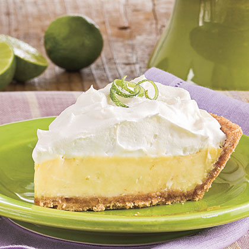
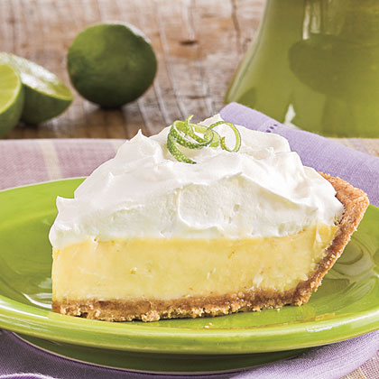

Food
Food  

Charleston has much to offer in terms of food. For Italian cuisine, heck out Trattoria Lucca. This restaurant is located right in the heart of downtown Charleston, and it is easily accessable by taxi and on foot. If you're looking for local flavor, you might enjoy Magnolia They offer their own unique spin on local delicacies. If dessert is what you desire, head on over to Wildflour Pastry. with a nice selection of handmade desserts, you'll be sure to enjoy.
To return to the main page, click on the Back to Index Link in the Menu. If you wish to learn more about Charleston, click on the About Charleston Link in the Menu. Hotels can be found via the Lodging link. To plan your next adventure in and around the city click Places to go.